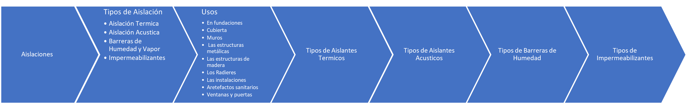
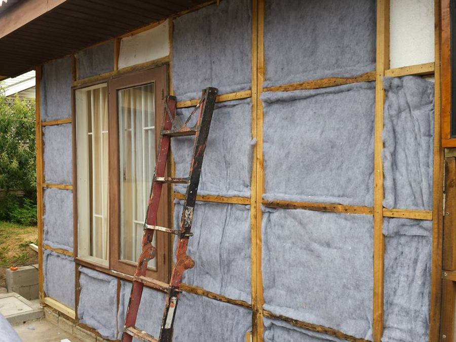
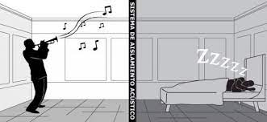
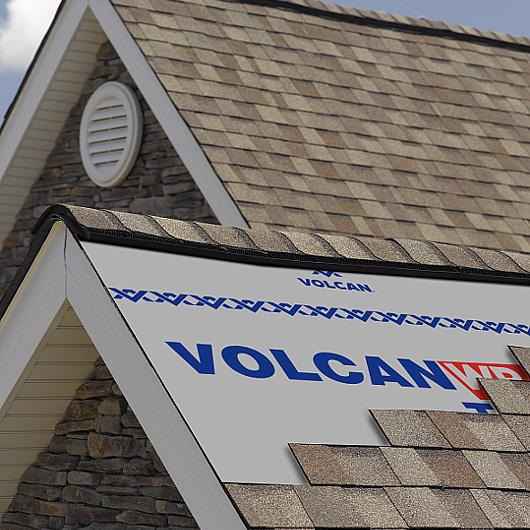
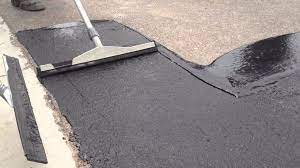
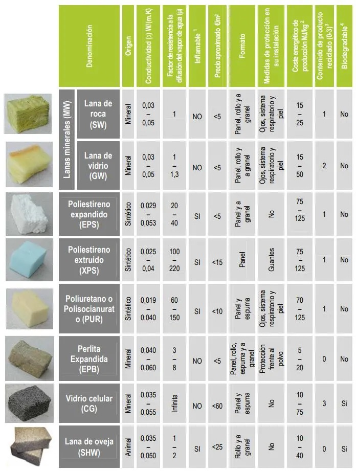
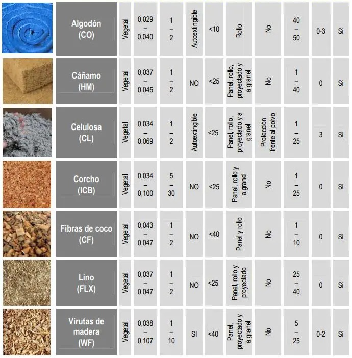

Aislaciones
Contents
{kind=link}
23. Aislaciones#
{kind=link}
23.1. Tipos de Aislación#
23.1.1. Aislación Termica#
A pesar de las condiciones exteriores, el propósito principal de los cerramientos de un edificio es mantener las condiciones interiores. El intercambio de calor reducido entre el interior y el exterior permitirá que las paredes desempeñen el papel de aislamiento térmico, que es una forma de lograrlo.
{kind=link}
23.1.2. Aislación Acustica#
El principal objetivo del aislamiento acústico es detener o ralentizar la transmisión del ruido. La insonorización efectiva se mide por tres factores: aislamiento del ruido exterior del interior del edificio, reducción de la transmisión del sonido de una habitación a otra dentro del edificio y prevención de la transmisión del sonido al exterior en caso de aumento de las emisiones de ruido en el interior del edificio. Se puede distinguir entre ruido aéreo y ruido transmitido por estructuras y ruido de impacto.
{kind=link}
23.1.3. Barreras de Humedad y Vapor#
Cualquier material o lámina que ofrezca una fuerte resistencia al paso de la humedad y el agua se denomina barrera contra la humedad. Las barreras contra la humedad se utilizan para proteger contra el mal tiempo y sirven como barrera contra la entrada de viento y agua en el interior de un edificio (Volcan,2022).
{kind=link}
23.1.4. Impermeabilizantes#
Los impermeabilizantes son sustancias hechas de resinas, fibra de vidrio, emulsiones, polímeros y otros materiales que se aplican a una superficie para evitar que el agua u otros líquidos penetren. Para evitar filtraciones y aislar el agua o el vapor de agua para mantener superficies secas, se suelen utilizar en el revestimiento de cubiertas, terrazas, balcones, depósitos, sótanos, cisternas, piscinas, jardineras o cimientos (Mapei, 2021)
{kind=link}
23.2. Usos#
23.2.1. En fundaciones#
La impermeabilización evita la infiltración de humedad y el poliestireno detiene la pérdida de calor, protegiendo los cimientos tanto de la humedad como de la temperatura.
23.2.2. Cubierta#
La lana mineral, el vidrio aislante, el poliestireno y una membrana impermeable conocida como fieltro se utilizan para aislar el techo de la temperatura, la condensación, las plagas y el ruido.
23.2.3. Muros#
Con el uso de lana mineral, aislanglass y poliestireno, además de una membrana impermeable mejor conocida como fieltro, las paredes quedan protegidas de la temperatura de condensación, plagas y ruidos.
23.2.4. Las estructuras metálicas#
Se protegen del fuego mediante pinturas intumescentes, cuyo espesor de aplicación varía en función del tipo de elemento estructural utilizado (si soporta mayor carga del elemento a aislar).
23.2.5. Las estructuras de madera#
Se protegen de las plagas y la humedad mediante el uso de impregnación para evitar los hongos provocados por las termitas y la humedad.
23.2.6. Los Radieres#
Están protegidas de la humedad y la temperatura mediante poliestireno de alta densidad para evitar la pérdida de calor, polietileno como barrera de condensación y cama de ripio como barrera contra la humedad, de forma que si hay o existe humedad impide que ascienda.
23.2.7. Las instalaciones#
Están aisladas, incluyendo las tuberías de agua caliente para evitar pérdidas de calor, las tuberías de descarga para evitar ruidos, los cables eléctricos para evitar contactos y los olores (sellos de fugas).
23.2.8. Artefactos Sanitarios#
El equipo sanitario está sellado para evitar perdidas. (Electrodomésticos como lavabos e inodoros solo sellos contra fugas, no selle contra la pared).
23.2.9. Ventanas y puertasa#
Están selladas para evitar la pérdida de calor o la infiltración del viento. La eficiencia energética de este ahorro es crucial para la protección del medio ambiente (Chile.cubica, 2021)
23.3. Tipos de Aislantes Termicos#
 {kind=link}
{kind=link}
(Ovacen, 2018)
23.4. Tipos de Aislantes Acusticos#
Espuma de poliuretano.
Láminas de geotextil.
Lanas de roca o fibra de vidrio.
Planchas asfálticas.
Corcho.
{kind=link}
23.5. Tipos de Barreras de Humedad#
Fieltro asfáltico.
Membrana hidráfuga.
Geotextil.
{kind=link}
23.6. Tipos de Impermeabilizantes#
Acrílicos o líquidos.
Asfálticos.
Cementosos.
Mantos prefabricados.
Poliuretanos.
{kind=link}
from IPython.display import YouTubeVideo
YouTubeVideo("RYPqYsvV9G8")